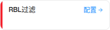
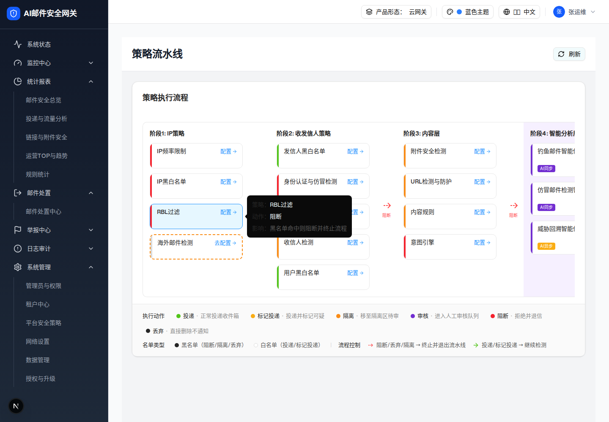

2.1 流水线 RBL 策略卡片
| demo 源 | strategy-pipeline-page.tsx renderPolicyCard()；数据定义见 L255 |
| 数据定义 | { priority: 1002, key: "rbl", stage: 1, type: "blocking", href: "/filter-rules/connection", todayHits: 45, todayBlocked: 45, todayExempted: 0, action: "pipeline.actionBlock" } |
| 交互层级数 | 1（初始态 + hover Tooltip；点击「配置」进入层级 1） |
0 交互层级 0：策略卡片初始态
触发路径：访问
/filter-rules/pipeline → 页面加载即渲染（无需交互）↓ 可交互预览：悬浮卡片查看 Tooltip；点击「配置」查看跳转提示（行为与 demo 一致）
RBL过滤
策略：RBL过滤
动作：阻断
影响：黑名单命中则阻断并终止流程
点击「配置」→ demo 打开全页面嵌入式抽屉（
setFullPageDrawerPolicy("rbl")）。
请查看 层级 1 · RBL 抽屉 + 配置面板 →

UI 元素清单
| # | 元素 | 类型 | 文案 / 图标 | 样式（实测） | 交互 | i18n key |
|---|---|---|---|---|---|---|
| 1 | 卡片根 | div（Tooltip 触发器） | — | 220×60，白底，1px #E8E8E8，radius 10px，cursor:pointer | hover → 边框 #1890FF + 背景 #E6F7FF，弹出 Tooltip | — |
| 2 | 状态条 | div | — | 宽 4px，bg-[#f5222d]（blocking 类） | 无 | — |
| 3 | 策略名 | span | 「RBL过滤」 | 14px / 500 / #262626 / truncate | 无 | pipeline.rblFilter |
| 4 | 配置入口 | button + lucide-arrow-right（12×12） | 「配置」+ → | 13px / #1890FF | click → 打开全页面抽屉 | common.configure |
| 5 | Tooltip | Radix Tooltip（Portal 渲染） | 策略：RBL过滤 / 动作：阻断 / 影响：黑名单命中则阻断并终止流程 | 深色浮层，13px | hover 触发 | pipeline.actionBlock、pipeline.rblFilterDesc |
DOM 树比对结果（预览 HTML vs demo 实际 DOM）
| 比对项 | demo 实际 DOM | 预览 HTML | 一致 |
|---|---|---|---|
| 根节点 | div.w-[220px].rounded-lg…flex（data-slot="tooltip-trigger"） | div.dp-card（同尺寸 / 边框 / 圆角，同为 Tooltip 触发器） | ✅ |
| 节点总数 | 9 | 9（div, div.bar, div.body, div.row, span, button, svg, path×2） | ✅ |
| 直接子节点数 | 2（状态条 + 内容区） | 2（Tooltip 浮层在 demo 中由 Portal 渲染到 body，不计入卡片子树） | ✅ |
| 状态条 | div.w-1.flex-shrink-0.bg-[#f5222d]，实测 4×58px | 宽 4px，#f5222d | ✅ |
| 标题文案 | "RBL过滤" | "RBL过滤" | ✅ |
| 按钮文案 + 图标 | "配置" + svg.lucide-arrow-right（2 个 path） | "配置" + 同一 lucide-arrow-right path 数据 | ✅ |
| Tooltip 文案 | 3 行：策略 / 动作 / 影响 | 3 行，逐字一致 | ✅ |
统计数字（todayHits=45） | 未渲染——卡片只显示名称 + 入口 | 未包含 | ✅ |
| 启用开关 | 未渲染——卡片上无 Switch | 未包含 | ✅ |
| hover 计算样式 | bg rgb(230,247,255) / border rgb(24,144,255) | 同（.dp-card:hover） | ✅ |
修正记录：首次提取时祖先 climb 停在内层 div.flex.items-center.justify-between（6 节点，仅标题行，截图宽度仅 190px）。已按 demo 实际卡片根 w-[220px]（9 节点，220×60）重新提取并重截图。